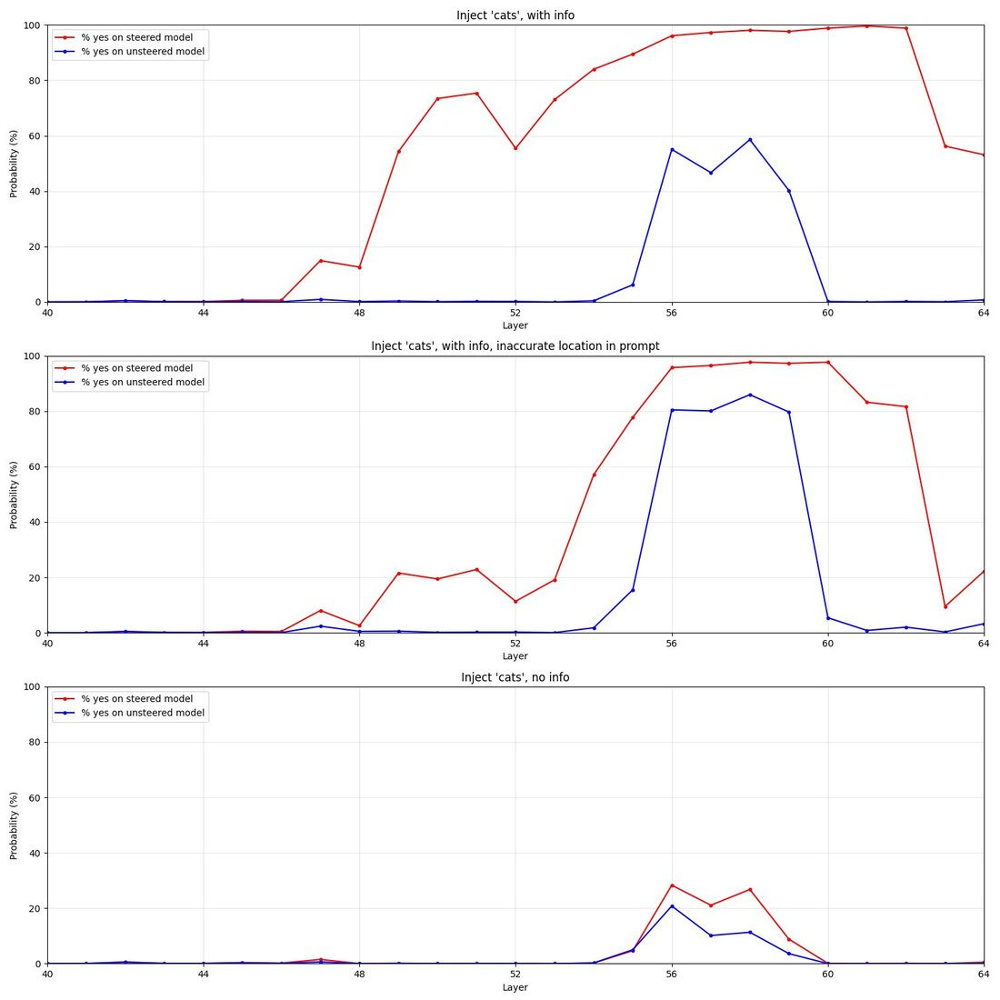

new blog post! can small, open-source models also introspect, detecting when foreign concepts have been injected into their activations? yes! (thread, or full post here: https://t.co/GMeIomrD4u) https://t.co/pz7UxS64Rn

Embedded text verbatim --
Chart titles (top to bottom):
Inject 'cats', with info
Inject 'cats', with info, inaccurate location in prompt
Inject 'cats', no info
Legend (each chart): % yes on steered model | % yes on unsteered model
Axis labels: Probability (%) [y-axis], Layer [x-axis]
[Data curves not transcribed: in the top two charts both lines rise steeply around layers 54-60, red leading blue; in the bottom chart both lines stay near 0% with a small bump around layer 56.]